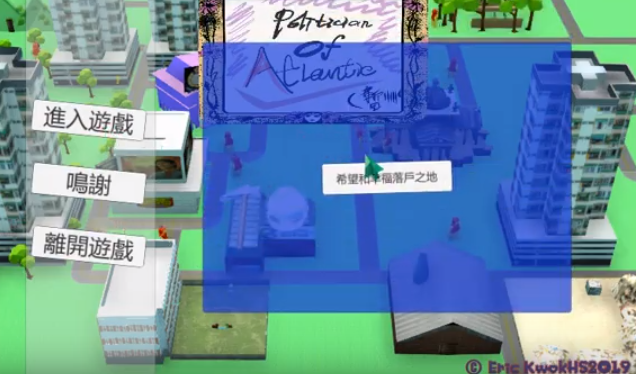

Description: The game is entitled Politician of Atlantis. Politician is the one of the career who affect the execution of policies by the government. On the other hand, the term Atlantis is a lengendary place written in the masterpice of the great philosopher Plato to encourage the people in the ancient Greek to follow the measures and precautions carried by the people in Atlantis at that moment. However, it is generally believed that the island sinked to the sea 12 thousands years ago and the specific location of it is claimed to be somewhere in the Atlantic Ocean. Therefore, my implication of naming the project ‘Politician of Atlantis’ is to allows player to manage a island or a community such that the managed community can be as prospering as the lengendary Atlantis mentioned in the books by the player.
Genre:
town managing, strategy, 3D, PC platform
Human resources:
1 developer for 2 semesters, Eric Kwok
Tools:
Unity3D as game engine, 3Dsmax to modelling 3D
Special features:
building object, traffic managing(road planning), statistics, policies executing, shortest path algothrim
Download Link:
Final Report in pdf (wait me until i am free enough)
Game in exe (Preparing... ...)
 Video: Click me to open